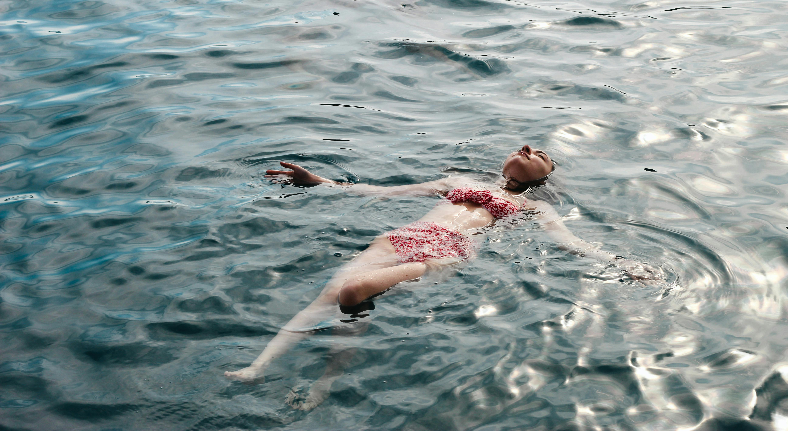

Larnaca, a captivating coastal city in Cyprus, seamlessly blends historical charm, natural beauty, and modern leisure, making it an ideal destination for travelers seeking diverse experiences in one location. A visit to the remarkable Agios Lazaros Church, a 9th-century Orthodox masterpiece with intricate Byzantine architecture and a fascinating history, is a must for those intrigued by cultural heritage, while the nearby Hala Sultan Tekke, a significant Muslim shrine nestled beside the tranquil Larnaca Salt Lake, provides a serene and picturesque setting, especially enchanting during the winter months when migratory flamingos grace the area.
For history enthusiasts, exploring the Kition Archaeological Site, with its fascinating remnants of an ancient city-kingdom dating back to the 13th century BCE, offers a glimpse into the region's rich past. Nature lovers will find themselves enchanted by the idyllic Finikoudes Beach, a bustling spot with soft sands and a vibrant promenade lined with cafes and shops, while the quieter Cape Kiti Lighthouse promises breathtaking coastal views, especially at sunset.
Adventure seekers can dive into the world-renowned Zenobia Shipwreck, an underwater treasure for diving enthusiasts, or indulge in water sports and enjoy the lively atmosphere at Mackenzie Beach, which also boasts trendy beach bars and mouthwatering seafood options. Beyond the city, a short drive leads to the charming Lefkara Village, celebrated for its intricate lace-making and traditional silverwork, or the family-friendly Camel Park in Mazotos, where visitors can enjoy camel rides and a small zoo.

Church of Saint Lazarus

Larnaca street shop's

Larnaca sea side